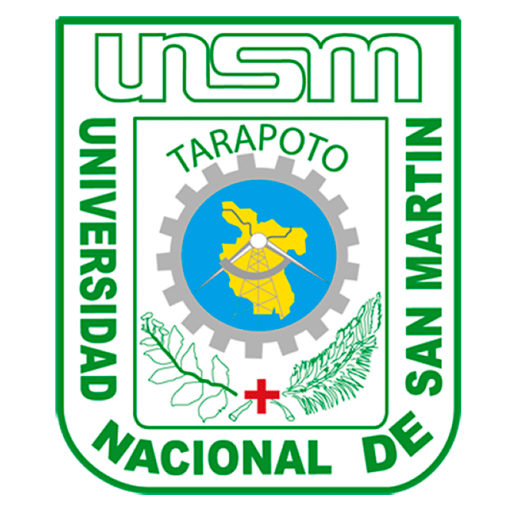
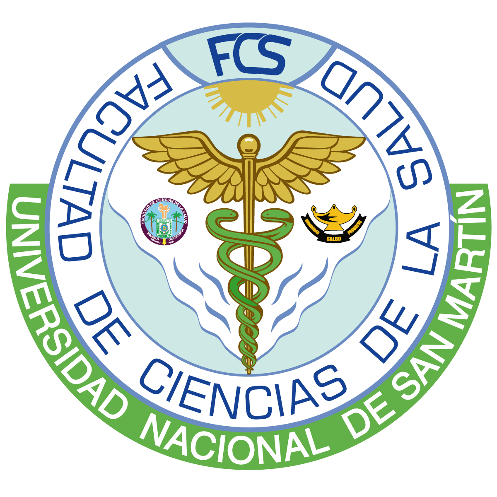

UNIVERSIDAD NACIONAL DE SAN MARTÍN
FACULTAD DE CIENCIAS DE LA SALUD

ADMISIÓN 2024-I
Segunda Especialidad en Obstetricia
HORARIO DE CLASES
| DÍA | HORARIO | HORAS |
|---|---|---|
| SÁBADO | 3:00 p.m. a 8:00 p.m. | 5 |
| DOMINGO | 8:00 a.m. a 1:00 p.m. | 5 |
CRONOGRAMA
| Inscripción y presentación de documentos | Hasta el 20 de marzo 2024 (Hora límite 2:45 pm) |
| Evaluación de expedientes | 21 y 22 de marzo 2024 |
| Examen de admisión | 23 de marzo 2024 (9 a 11 am) |
| Entrevista personal | 23 de marzo 2024 (2 a 5 pm) |
| Publicación de resultados | 24 de marzo 2024 (4 pm) |
| Acreditación de ingresantes (virtual) | 25 y 26 de marzo 2024 |
| Inicio de clases, semestre I | 20 de abril 2024 |
| Fin de clases, semestre I | 27 de octubre 2024 |
ENSEÑANZA
| CONCEPTO | CANT | COSTO | TOTAL |
|---|---|---|---|
| Inscripción | 1 | 100 | 100 |
| Derecho de carpeta | 1 | 250 | 250 |
| Matrícula por ciclo | 3 | 300 | 900 |
| Pensión de estudios | 18 | 400 | 7200 |
BANCO DE LA NACIÓN
Cta. Cte: 00541-043101
DIRIGIDO A
Profesionales Obstetras que deseen ser especialistas laborando
en instituciones.
REQUISITOS DE ADMISIÓN
- Solicitud de Admisión, debidamente llenada.
- Título Profesional de Obstetra registrado en SUNEDU (copia autenticada por la Universidad de origen para Universidades Nacionales, o revalidadas por SUNEDU en el caso de Universidades Extranjeras).
- Currículo Vitae con documentos de los 3 últimos años.
- Copia del DNI legalizada por Notario, o del Carné de Extranjería o Pasaporte si es extranjero.
- Recibo de pago por Derecho de Inscripción y Derecho de Admisión.
- Cuatro (04) fotografías recientes; con terno, tamaño carné a colores.
- Compromiso de pago de estudios de Segunda Especialidad.
- Compromiso de entrega de documentos faltantes.
- Declaración Jurada de Autenticidad.
DESCARGAR FORMATOS
INFORMACIÓN
987 721 182 -
952 591 696